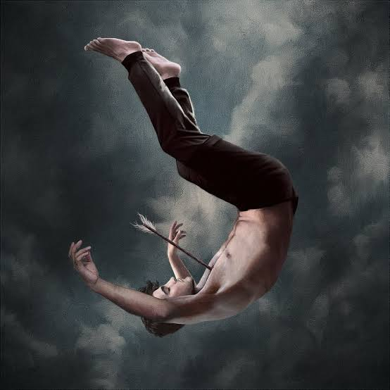
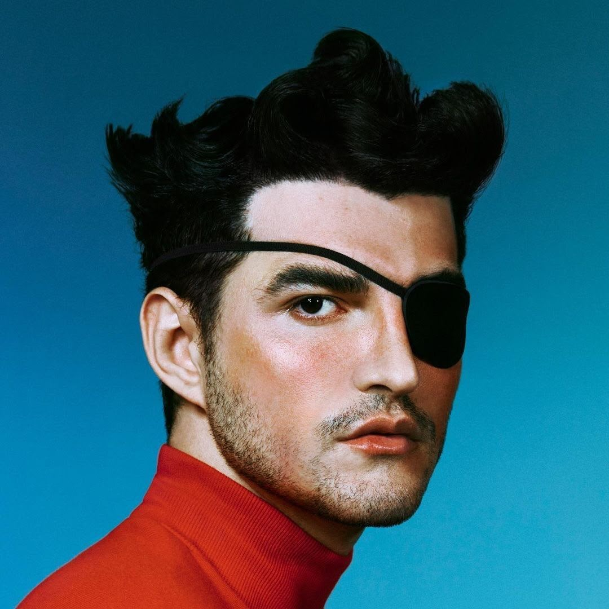
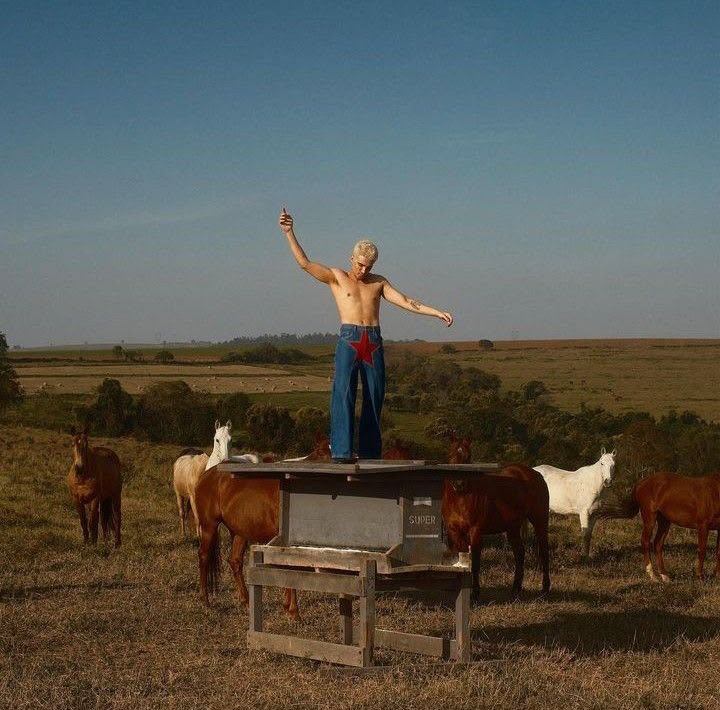

Entre versos intensos, sentimentos profundos e melodias marcantes, descubra um artista que transforma emoções em canções.
Ouvir agoraJão
Julho tem passado lento Engraçado, nem o tempo consegue encarar O jeito que você tentou Escolher cada palavra pra não me machucar E eu me lembrava assim de julho Férias da escola, frio, amigos juntos Adiando agosto, eu tinha tudo, tudo e agora Julho é tudo o que a gente não vai mais ser Julho é ler o que você deixou Dizendo que não tinha mais como ficar Julho é lembrar que fui eu quem ficou Julho é só deixar o tempo te esquecer Agora, julho é você Os dias têm sido mais fáceis Mas sempre existe essa cidade E ela insiste em me lembrar Dos lugares que dormimos juntos Nossos endereços mais ocultos Eu te dizia que eu sentia tudo, tudo e agora Julho é tudo o que a gente não vai mais ser Julho é ler o que você deixou Dizendo que não tinha mais como ficar Julho é lembrar que fui eu quem ficou Julho é só deixar o tempo te esquecer Agora, julho é você Em cada canto que eu vou Eles me perguntam se Eu já sei o que o amor Vira quando chega o fim Mas como eu poderia se eu ainda estou aqui? Se eu ainda me lembro de tudo? Se eu ainda estou em julho? Agora, julho é você
2018

2019

2021

2023
Jão é um dos artistas mais marcantes da música pop brasileira contemporânea. Suas músicas misturam emoção, intensidade e profundidade ao abordar temas como amor, saudade e autoconhecimento de forma sensível e impactante.
Sua obra vai além de canções sobre relacionamentos. Ela também dialoga com questões de identidade, liberdade emocional e aceitação pessoal, trazendo representatividade e espaço para diferentes formas de sentir e existir.
Mais do que um cantor, Jão representa a permissão para sentir. Ele expressa a ideia de que demonstrar afeto, fragilidade e intensidade não é fraqueza, mas uma forma genuína de humanidade. Sua arte rompe bloqueios emocionais e incentiva o autoconhecimento e o amor-próprio.
Apesar de ser considerado por alguns como dramático ou excessivamente emocional, esse é justamente o seu impacto: transformar sentimentos em arte e dar voz a emoções que muitas pessoas não conseguem expressar.
Para muitos fãs, sua música representa acolhimento e identificação. Ele se tornou um símbolo da juventude emocional, ajudando pessoas a compreenderem melhor seus próprios sentimentos e experiências.
Eu não escuto Jão apenas como quem ouve um artista, mas como alguém que me acompanha por dentro. Em muitos momentos, suas músicas foram um espelho do que eu sentia e não conseguia nomear.
Eu sempre tive dificuldade de lidar com meus próprios sentimentos. Bloqueios emocionais, dúvidas e uma certa resistência em me permitir sentir de forma tão intensa. Mas, de alguma forma, as músicas dele foram abrindo espaço dentro de mim.
Quando eu escuto Jão, eu entendo que sentir não é um exagero, não é fraqueza e nem algo que precisa ser escondido. Pelo contrário, é parte de quem eu sou. E isso me ajudou a me olhar de um jeito mais honesto.
Eu sinto que ele fala de amor, saudade, perdas e autoconhecimento de um jeito que traduz coisas que eu mesmo já vivi ou ainda vivo. Não é só sobre relacionamentos, mas sobre se reconhecer, se aceitar e se permitir existir por inteiro.
Em muitos momentos, eu me vi quebrando barreiras internas através da música dele. Coisas que antes eu guardava ou evitava sentir, passaram a fazer parte de uma compreensão maior de mim mesmo.
Eu não vejo Jão apenas como um cantor pop brasileiro importante, mas como alguém que me ajudou a entender minha própria sensibilidade. E, de certa forma, eu sou assim hoje também por causa disso: mais aberto ao que sinto, mais consciente de mim.